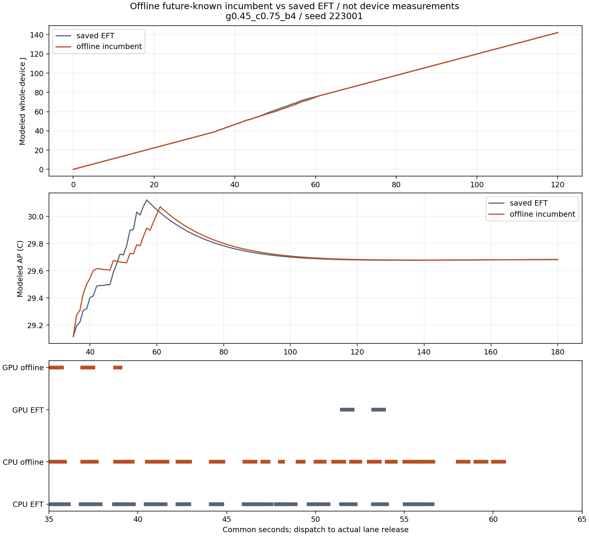

저장된 같은4입력/48요청,mean 처리문맥의 제한된 미래입력 최적화입니다. 실제 기기 관측·온라인 정책·독립 확인이 아닙니다. grid20ms,사례당120초를 바꾸지 않았습니다. solver 시간제한을 완료/불가능 증명으로 바꾸지 않습니다.
queue75 두사례는 실제 원PC실행기로 재생해 선택한 J/최고AP/양의AP면적이 함께 낮아졌지만 응답은 길어졌습니다. 전체열입력과 부호있는AP적분은 별도 표시합니다. 이 지표들의 동시 감소는 모든 시점에서 더 차갑다는 뜻이 아닙니다. 제어 비용이 포함되지 않아 작은J이득의 실기기 의미는 미확인입니다.
queue50의 정수해 미확보는 제약불가능이 아닙니다. 같은grid의 결정적CPU일정이 네사례 모두 기한/열 제약을 만족했으나 J는 증가했습니다. 최적성/현재정책우월성/정확도PASS/strict승격은 없습니다.
전체4사례·응답상충 · 출처·수치·미판정 · 계약·검증·한계
| envelope | seed | status | deadline_met | planned | delta_energy_j | delta_peak_ap_c | delta_thermal_degree_seconds | delta_urgent_p95_ms | delta_normal_mean_ms | integrated_model_drive_delta_c | signed_AP_area_delta_c_s | same_grid_feasible_witness | exact_replay_joint_nonworsening |
|---|---|---|---|---|---|---|---|---|---|---|---|---|---|
| g0.45_c0.5_b4 | 223001 | no_incumbent | 미확인 / null | 48 | 미확인 / null | 미확인 / null | 미확인 / null | 미확인 / null | 미확인 / null | 미확인 / null | 미확인 / null | True | False |
| g0.45_c0.5_b4 | 223002 | no_incumbent | 미확인 / null | 48 | 미확인 / null | 미확인 / null | 미확인 / null | 미확인 / null | 미확인 / null | 미확인 / null | 미확인 / null | True | False |
| g0.45_c0.75_b4 | 223001 | replayed_incumbent | 48 | 48 | -0.052468 | -0.049803 | -0.886985 | 686.803395 | 2398.595657 | 0.0332 | 0.617532 | True | True |
| g0.45_c0.75_b4 | 223002 | replayed_incumbent | 48 | 48 | -0.013042 | -0.045679 | -1.164743 | 776.264289 | 2981.24745 | 0.002494 | -0.140978 | True | True |
